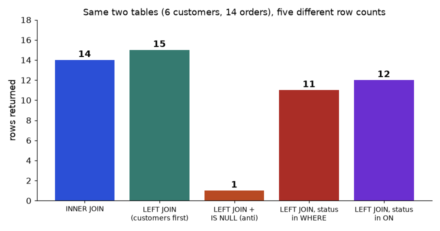
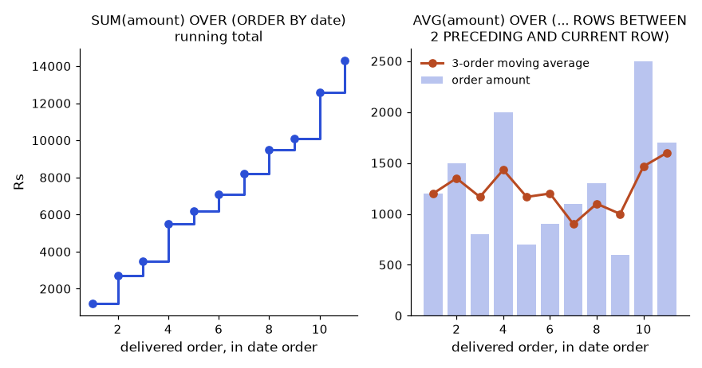

Sooner or later a notebook that worked on 1,000 rows is asked to handle 10 million. It crawls, or it crashes with "MemoryError". The cure is not a bigger laptop first. The cure is to understand what pandas does underneath (NumPy arrays), to stop writing loops, and to store data in smaller types. In this chapter you learn the core of NumPy, the idea of vectorisation, a few memory tricks, and where Polars and DuckDB fit when pandas is not enough. By the end you will be able to take a slow script, find the loop, replace it, and prove with a timer that it is faster.
pip install polars duckdb (both free).Words you need
| Word | Meaning |
|---|---|
ndarray | NumPy's array: same-type values in a grid |
shape | Size in each direction, e.g. (2, 3) is 2 rows, 3 columns |
axis | A direction: axis=0 goes down the rows, axis=1 goes across the columns |
| dtype | The type of every element (int64, float64, int8, ...) |
| Vectorised | One operation applied to a whole array at once, no Python loop |
import numpy as np
a = np.array([[1, 2, 3], [4, 5, 6]])
print(a.shape, a.dtype, a.ndim, a.size)
print(a.sum(), a.sum(axis=0), a.sum(axis=1), a.mean(axis=0))Predict: what is a.sum(axis=0)? (Hint: axis 0 collapses the rows.)
(2, 3) int64 2 6
21 [5 7 9] [ 6 15] [2.5 3.5 4.5]shape (2, 3): 2 rows, 3 columns. ndim 2: two directions. size 6: six items.a.sum() adds everything: 1 + 2 + 3 + 4 + 5 + 6 = 21.axis=0 adds down each column: 1 + 4 = 5, 2 + 5 = 7, 3 + 6 = 9. This gives [5 7 9].axis=1 adds across each row: 1 + 2 + 3 = 6 and 4 + 5 + 6 = 15.mean(axis=0) gives 2.5, 3.5, 4.5 (column averages, e.g. (1 + 4) / 2 = 2.5).(2, 3) summed over axis 0 leaves shape (3,).Indexing and masks
print(a[:, 1], a[1, :2], a[a > 2])[2 5] [4 5] [3 4 5 6]a[:, 1]: all rows, column 1: values 2 and 5.a[1, :2]: row 1, first two columns: 4 and 5.a[a > 2]: a boolean mask keeps the values above 2: 3, 4, 5, 6 (flattened to one dimension).Useful functions
| Function | Does | Example result |
|---|---|---|
np.arange(0, 1, 0.25) | Range with a step | [0. 0.25 0.5 0.75] |
np.linspace(0, 1, 5) | 5 evenly spaced points, end included | [0. 0.25 0.5 0.75 1.] |
np.unique(x, return_counts=True) | Distinct values and counts | for [3,1,2,3,1,3]: values [1 2 3], counts [2 1 3] |
np.argsort(x) | Positions that would sort x | [1 4 2 0 3 5] |
np.where(c, a, b) | If-then-else | ['hi' 'lo' 'hi' 'hi' 'lo' 'hi'] for x > 1 |
(All verified by running; x = np.array([3, 1, 2, 3, 1, 3]).) Check argsort: sorted order is 1, 1, 2, 3, 3, 3; the 1s are at positions 1 and 4, the 2 at position 2, the 3s at positions 0, 3, 5.
The picture
a = [[1 2 3] axis=1 → across →
[4 5 6]]
axis=0 sum(axis=1) = [ 6 15]
↓ down sum(axis=0) = [ 5 7 9]Connection to the real job. df["col"].values or .to_numpy() hands you the NumPy array. scikit-learn models and most scientific libraries want NumPy arrays.
Applications
Check yourself
(4, 5), what shape does sum(axis=0) return? Answer: (5,).np.linspace(0, 10, 3)? Answer: [0. 5. 10.].The rule. Compare the shapes from the right. Two sizes are compatible if they are equal or one of them is 1. A size of 1 is stretched.
print(a + np.array([10, 20, 30]))
print(a + np.array([[100], [200]]))[[11 22 33]
[14 25 36]]
[[101 102 103]
[204 205 206]](2, 3) plus shape (3,). The 3 matches the last axis; the row [10 20 30] is added to each row.(2, 3) plus shape (2, 1). The column [[100], [200]] is stretched across the 3 columns: row 0 gets +100, row 1 gets +200.Worked example 6.2.1 Centre each column (subtract its mean) with broadcasting.
a are [2.5, 3.5, 4.5].a - a.mean(axis=0) subtracts the (3,) means from each row: row 0 becomes [-1.5, -1.5, -1.5], row 1 becomes [1.5, 1.5, 1.5].dtypes and their traps
print(np.array([1, 2, 3], dtype=np.int8) * 100)
print(0.1 + 0.2 == 0.3, np.isclose(0.1 + 0.2, 0.3))[100 -56 44]
False Trueint8 holds only −128 to 127. 2 × 100 = 200 does not fit, so it wraps around to −56, and 3 × 100 = 300 wraps to 44. No error is raised. Choose a type big enough for your numbers.0.1 + 0.2 is 0.30000000000000004, not exactly 0.3. Never test decimals with ==; use np.isclose (or math.isclose).Random numbers. Use the modern Generator, with a seed so results can be repeated.
rng = np.random.default_rng(42)
print(rng.integers(1, 7, size=5), rng.normal(100, 15, size=3).round(2))[1 5 4 3 3] [114.11 70.73 80.47]Five dice throws (1 to 6) and three values from a normal distribution with mean 100 and standard deviation 15. Run it again with the same seed and you get the same numbers. Always set a seed in analyses so a colleague can reproduce your sample.
Linear algebra, briefly (for the maths, see the learner's Math PDF, linear algebra pillar). Solve the two equations 2x + y = 5 and x + 3y = 10:
A = np.array([[2., 1.], [1., 3.]]); b = np.array([5., 10.])
print(np.linalg.solve(A, b), np.linalg.inv(A).round(3), np.linalg.det(A), A @ A)[1. 3.] [[ 0.6 -0.2]
[-0.2 0.4]] 5.000000000000001 [[ 5. 5.]
[ 5. 10.]]solve gives x = 1, y = 3. Check: 2 × 1 + 3 = 5 and 1 + 3 × 3 = 10.A @ A is matrix multiplication: for example the top-left entry is 2 × 2 + 1 × 1 = 5.The picture
a (2x3) + [10 20 30] (3,) stretched down: [10 20 30]
[[1 2 3] [10 20 30] [10 20 30]
[4 5 6]]Connection to the real job. Broadcasting is why NumPy and pandas can do a calculation on a million rows in a millisecond. Integer overflow bugs happen in counters and IDs in real systems (a 32-bit counter, a smaller type chosen to save memory).
Applications
==. Money and rates produce tiny errors. Use np.isclose, or round both sides, or keep money in integer paise.Check yourself
int8 limit and what happens on overflow? Answer: −128 to 127; values silently wrap around.for loop handles one value per step and pays Python's overhead each time. A vectorised operation hands the whole array to fast compiled code, a roller across the entire wall.Definition. Vectorised code applies an operation to a whole array or column without an explicit Python loop. In pandas that means column arithmetic, comparison, .str, .dt, groupby, and np.where, not for loops or apply(axis=1).
Worked example 6.3.1 Sum of squares of 1,000,000 random numbers, loop vs vector.
import time
v = rng.normal(size=1_000_000)
t = time.perf_counter(); s = 0.0
for e in v: s += e * e
t1 = time.perf_counter() - t
t = time.perf_counter(); s2 = (v * v).sum(); t2 = time.perf_counter() - t
print(f"loop {t1:.3f}s vector {t2:.5f}s speedup {t1/t2:.0f}x", np.isclose(s, s2))Real output on this machine:
loop 0.096s vector 0.00080s speedup 120x Truenp.isclose is True).apply it is far worse (next example).Worked example 6.3.2 apply(axis=1) vs column arithmetic on 300,000 rows.
n = 300_000
df = pd.DataFrame({"a": rng.integers(0, 100, n), "b": rng.random(n)})
r1 = df.apply(lambda r: r.a * r.b, axis=1) # row by row
r2 = df.a * df.b # whole columnapply 1.60s vectorized 0.0008s Trueapply builds a Series object for every row. That is 1.6 s for 300,000 rows (about 5 microseconds per row), versus 0.8 ms for the single multiplication. The ratio is 1.60 / 0.0008 = 2,000 times.np.allclose(r1, r2) is True: same numbers.apply.When a loop is unavoidable. Some logic really is sequential (each row depends on the previous result). Then try np.where, np.select (several conditions), cumsum/shift/rolling, or groupby first. If still stuck, use numba (free, compiles your loop) or Polars/DuckDB.
np.select for many conditions. np.select([x < 100, x < 500], ["low", "mid"], default="high") is the vectorised version of an if / elif / else ladder (used in Chapter 12's RFM segments).
The picture
loop: step step step step ... (1,000,000 times, Python checks types each time)
vectorised: [ one call to compiled code processes all 1,000,000 ]Connection to the real job. In a code review, "why is there a for loop here?" is a standard comment. In interviews, "make this faster" almost always means vectorise, then reduce memory.
Applications
apply is vectorised because it is "a pandas function". It is a loop in disguise. Prefer built-in column operations.Check yourself
df.apply(lambda r: r.a * r.b, axis=1)? Answer: It loops row by row; df.a * df.b does the same thing far faster.np.select replace? Answer: A chain of if / elif / else for a whole array.category type for repeated text and reading data in chunks reduce memory so larger files can be handled.category column stores each distinct name once and keeps a small number per row.Worked example 6.4.1 Memory of a text column with 4 distinct cities, 300,000 rows.
cities = rng.choice(["Pune", "Delhi", "Mumbai", "Chennai"], size=n)
d2 = pd.DataFrame({"city": cities})
m1 = d2.memory_usage(deep=True).sum()
d2["city"] = d2.city.astype("category")
m2 = d2.memory_usage(deep=True).sum()
print(m1, m2, round(m1 / m2, 1))16349930 300350 54.4str) the column cost 16,349,930 bytes (about 16 MB). As a category it cost 300,350 bytes: one small integer code (1 byte, since there are fewer than 128 categories) per row, 300,000 bytes, plus a few hundred bytes for the four names. 16,349,930 / 300,350 = 54.4.Shrinking numbers. A column of 300,000 integers from 0 to 999 used 2,400,000 bytes as int64 (8 bytes each) and 600,000 bytes as int16 (2 bytes each, range −32,768 to 32,767). A 4 times saving: 2,400,000 / 600,000 = 4.
The memory checklist
| Trick | Saves | Risk |
|---|---|---|
usecols=[...] at read time | Columns you never use | None |
dtype={"x": "int16"} | Up to 4x on integers | Overflow if the type is too small |
astype("category") | Up to 50x on repeated text | Poor on near-unique text |
chunksize and aggregate per chunk | Never loads the whole file | More code |
| Parquet instead of CSV | Smaller on disk, typed, faster | Needs pyarrow |
pyarrow strings (string[pyarrow]) | Less memory than Python strings | Needs pyarrow (not run here) |
Delete big objects (del df) | Frees memory | None |
Rule of thumb: pandas needs RAM of about 2 to 5 times the size of the CSV file. A 2 GB CSV on an 8 GB laptop is already risky.
The picture
text: "Mumbai" "Pune" "Mumbai" "Delhi" ... (each string stored in full)
category: codes [2, 3, 2, 1, ...] + names {0:Chennai, 1:Delhi, 2:Mumbai, 3:Pune} (stored once)Connection to the real job. Cloud notebooks charge for memory; a 50x saving can make an analysis run on a small machine. Data engineers choose column types in table schemas for the same reason.
Applications
df.x.min() and df.x.max() first. An overflowed int8 will not warn you.Check yourself
category help most? Answer: Few distinct values repeated across many rows.int16 use per value? Answer: 2.usecols save? Answer: Memory and time from columns you do not need.Not run here (libraries not installed); syntax is standard.
import polars as pl
lf = (pl.scan_csv("orders.csv") # lazy: nothing is read yet
.filter(pl.col("status") == "delivered")
.group_by("city")
.agg(pl.col("amount").sum().alias("revenue"))
.sort("revenue", descending=True))
print(lf.collect()) # runs the whole plan nowimport duckdb
duckdb.sql("""
SELECT city, SUM(amount) AS revenue
FROM 'orders.csv'
WHERE status = 'delivered'
GROUP BY city
ORDER BY revenue DESC
""").df() # returns a pandas DataFrameWhy they are fast. Both read only the columns and rows they need (a "plan" is optimised before running), use all cores, and avoid copying. DuckDB can query a Parquet file larger than memory.
Comparison
| Tool | Best for | Style | Typical limit |
|---|---|---|---|
| pandas | Everything up to a few GB, richest ecosystem | Python, eager | Single core, memory heavy |
| Polars | Big data on one machine, speed | Python expressions, lazy or eager | Smaller ecosystem than pandas |
| DuckDB | SQL users, files too large for memory | SQL | Single machine |
| Spark | Data bigger than one machine | Python/SQL on a cluster | Overhead and cost for small data |
Worked example 6.5.1 Choose the tool.
Connection to the real job. Job posts list pandas first, SQL always, and Polars/DuckDB as a bonus. Knowing that they exist, and when to reach for them, is enough for most analyst interviews.
Applications
%timeit, time.perf_counter) and fix that one.Check yourself
collect().SELECT, WHERE, GROUP BY, JOIN and ORDER BY.sqlite3 module, with pandas only to print the table). The same SQL works, with tiny changes, in PostgreSQL, MySQL, SQL Server, BigQuery, Snowflake and DuckDB. Where a database differs, we say so. The pandas display shows a SQL NULL (missing value) as NaN or None. The SQL document in this site goes deeper into the language itself. Here we focus on the analyst's daily patterns.The small shop database. Two tables, small enough that you can check every answer by eye. customers has 6 rows (customer id, name, city, signup date). orders has 14 rows (order id, customer id, order date, amount in Rs, status). One order has a missing amount (order 9, pending) and one customer, Dev, has never ordered. These two details are on purpose: real data always has both.
Words you need first
| Word | Plain meaning | Example |
|---|---|---|
| Row, column | One record, one attribute | One order, its amount |
| Primary key | A column whose value is different in every row | order_id |
| Foreign key | A column that points at the primary key of another table | orders.cust_id points at customers.cust_id |
| Aggregate | A function that turns many rows into one number | SUM, COUNT, AVG, MIN, MAX |
| NULL | "Unknown or missing", not zero and not an empty string | The amount of the pending order |
| CTE | Common table expression: a named temporary result written with WITH name AS (...) | WITH delivered AS (...) |
The order the database really reads your query. You write SELECT first, but the engine runs the clauses in a different order. This one fact explains most beginner errors.
| Step | Clause | What happens |
|---|---|---|
| 1 | FROM / JOIN | Choose the tables and combine them |
| 2 | WHERE | Throw away rows (before any grouping) |
| 3 | GROUP BY | Put the remaining rows into buckets |
| 4 | HAVING | Throw away whole buckets (after aggregating) |
| 5 | SELECT | Compute the output columns and their names |
| 6 | ORDER BY, LIMIT | Sort and cut the result |
import sqlite3, pandas as pd
con = sqlite3.connect(":memory:")
con.executescript("""
CREATE TABLE customers(cust_id INT, name TEXT, city TEXT, signup_date TEXT);
INSERT INTO customers VALUES
(1,'Asha','Pune','2025-01-05'),(2,'Ravi','Delhi','2025-01-20'),
(3,'Meera','Pune','2025-02-03'),(4,'Imran','Mumbai','2025-02-14'),
(5,'Kavya','Delhi','2025-03-01'),(6,'Dev','Mumbai','2025-03-10');
CREATE TABLE orders(order_id INT, cust_id INT, order_date TEXT, amount REAL, status TEXT);
INSERT INTO orders VALUES
(1,1,'2025-01-06',1200,'delivered'),(2,1,'2025-01-25',800,'delivered'),
(3,2,'2025-01-22',1500,'delivered'),(4,3,'2025-02-04',500,'returned'),
(5,3,'2025-02-20',900,'delivered'),(6,1,'2025-02-11',2000,'delivered'),
(7,4,'2025-02-15',700,'delivered'),(8,2,'2025-03-02',1100,'delivered'),
(9,5,'2025-03-03',NULL,'pending'),(10,4,'2025-03-12',1300,'delivered'),
(11,1,'2025-03-15',600,'delivered'),(12,5,'2025-03-20',2500,'delivered'),
(13,3,'2025-03-22',400,'cancelled'),(14,2,'2025-04-02',1700,'delivered');
""")
def q(sql):
print(pd.read_sql(sql, con).to_string(index=False)); print()
# 1. one row per city
q("SELECT city, COUNT(*) AS customers FROM customers GROUP BY city ORDER BY customers DESC, city")
# 2. COUNT(*) counts rows, COUNT(amount) skips NULLs, AVG skips NULLs too
q("""SELECT status, COUNT(*) AS n, SUM(amount) AS total, COUNT(amount) AS n_amount, AVG(amount) AS avg_amt
FROM orders GROUP BY status""")
# 3. WHERE filters rows first, HAVING filters buckets after SUM
q("""SELECT cust_id, SUM(amount) AS spend FROM orders
WHERE status = 'delivered' GROUP BY cust_id
HAVING SUM(amount) > 2000 ORDER BY spend DESC""") city customers
Delhi 2
Mumbai 2
Pune 2
status n total n_amount avg_amt
cancelled 1 400.0 1 400.0
delivered 11 14300.0 11 1300.0
pending 1 NaN 0 NaN
returned 1 500.0 1 500.0
cust_id spend
1 4600.0
2 4300.0
5 2500.0Reading the three results. Each city has 2 customers, so the tie is broken by city name. In query 2 the pending group has one row but COUNT(amount) is 0 and its total is NULL, because SUM of nothing but NULLs is NULL, not 0. In query 3, three customers pass the 2,000 line: 1 (Rs 4,600), 2 (Rs 4,300) and 5 (Rs 2,500).
Problem 6.6.1 The average of amount over the whole orders table: is it SUM / 14 or SUM / 13? Compute it by hand from the status table above.
| Idea | AVG ignores NULLs, so it divides by the count of non-NULL amounts, not by the row count. |
|---|---|
| Sum | 400 + 14,300 + 500 = 15,200 (cancelled + delivered + returned; pending has no amount) |
| Count | 1 + 11 + 1 = 13 non-NULL amounts, out of 14 rows |
| Answer | 15,200 / 13 = 1,169.23, not 15,200 / 14 = 1,085.71 |
| Meaning | If NULL means "unknown", skipping it is right. If NULL really means 0 (a free order), use AVG(COALESCE(amount, 0)) and state that choice. |
Problem 6.6.2 Why does WHERE SUM(amount) > 2000 fail, and what is the fix?
| Idea | WHERE runs at step 2, before the buckets exist. At that moment there is no sum to compare. |
|---|---|
| Fix | Move the condition after grouping: GROUP BY cust_id HAVING SUM(amount) > 2000. Keep row-level conditions (status = 'delivered') in WHERE. |
| Check | Query 3 above returns 3 customers. Removing WHERE status = 'delivered' would add the returned and cancelled amounts into the sums, which is a different (wrong) question. |
COUNT(*) when you mean "how many customers" after a join. After a join, one customer appears once per order, so COUNT(*) counts orders. Use COUNT(DISTINCT cust_id). The same trap exists in pandas (count versus nunique, see the funnel in Chapter 12).A join matches rows of two tables on a key. The type of join decides what happens to rows with no match. Think of customers on the left and orders on the right.
| Join | Keeps | Use it for |
|---|---|---|
INNER JOIN | Only rows that match on both sides | Orders with their customer details |
LEFT JOIN | Every left row, matched or not (right columns are NULL if no match) | All customers, including those who never ordered |
LEFT JOIN ... WHERE right.key IS NULL | Left rows with no match (an "anti-join") | Customers who never ordered |
FULL OUTER JOIN | Every row from both sides | Reconciling two systems (not in older SQLite, available in most others) |
import sqlite3, pandas as pd
con = sqlite3.connect(":memory:")
con.executescript("""
CREATE TABLE customers(cust_id INT, name TEXT, city TEXT, signup_date TEXT);
INSERT INTO customers VALUES
(1,'Asha','Pune','2025-01-05'),(2,'Ravi','Delhi','2025-01-20'),
(3,'Meera','Pune','2025-02-03'),(4,'Imran','Mumbai','2025-02-14'),
(5,'Kavya','Delhi','2025-03-01'),(6,'Dev','Mumbai','2025-03-10');
CREATE TABLE orders(order_id INT, cust_id INT, order_date TEXT, amount REAL, status TEXT);
INSERT INTO orders VALUES
(1,1,'2025-01-06',1200,'delivered'),(2,1,'2025-01-25',800,'delivered'),
(3,2,'2025-01-22',1500,'delivered'),(4,3,'2025-02-04',500,'returned'),
(5,3,'2025-02-20',900,'delivered'),(6,1,'2025-02-11',2000,'delivered'),
(7,4,'2025-02-15',700,'delivered'),(8,2,'2025-03-02',1100,'delivered'),
(9,5,'2025-03-03',NULL,'pending'),(10,4,'2025-03-12',1300,'delivered'),
(11,1,'2025-03-15',600,'delivered'),(12,5,'2025-03-20',2500,'delivered'),
(13,3,'2025-03-22',400,'cancelled'),(14,2,'2025-04-02',1700,'delivered');
""")
def q(sql):
print(pd.read_sql(sql, con).to_string(index=False)); print()
# 1. inner join: Mumbai customers who ordered
q("""SELECT c.name, o.order_id, o.amount FROM customers c
INNER JOIN orders o ON o.cust_id = c.cust_id WHERE c.city = 'Mumbai'""")
# 2. left join: every customer, with 0 for no orders
q("""SELECT c.name, COUNT(o.order_id) AS n_orders, COALESCE(SUM(o.amount), 0) AS spend
FROM customers c LEFT JOIN orders o ON o.cust_id = c.cust_id
GROUP BY c.name ORDER BY spend DESC, c.name""")
# 3. anti-join: customers who never ordered
q("""SELECT c.name FROM customers c
LEFT JOIN orders o ON o.cust_id = c.cust_id WHERE o.order_id IS NULL""")
# 4. where the filter lives changes the answer
q("""SELECT COUNT(*) AS filter_in_where FROM customers c
LEFT JOIN orders o ON o.cust_id = c.cust_id WHERE o.status = 'delivered'""")
q("""SELECT COUNT(*) AS filter_in_on FROM customers c
LEFT JOIN orders o ON o.cust_id = c.cust_id AND o.status = 'delivered'""") name order_id amount
Imran 7 700.0
Imran 10 1300.0
name n_orders spend
Asha 4 4600.0
Ravi 3 4300.0
Kavya 2 2500.0
Imran 2 2000.0
Meera 3 1800.0
Dev 0 0.0
name
Dev
filter_in_where
11
filter_in_on
12Notice that COUNT(o.order_id) gives 0 for Dev, because it counts non-NULL order ids, while COUNT(*) would give 1 (the single NULL-filled row). The last two queries give 11 and 12 rows. This difference is the most common join mistake in interviews, so look at it carefully.

How to read it: each bar is the number of rows the query returns. The LEFT JOIN keeps all 14 orders plus Dev, who has no orders, so 15. Putting the filter status = 'delivered' in WHERE removes Dev (his status is NULL, and NULL = 'delivered' is not true), giving 11. Putting it in ON only restricts which orders match, so Dev survives with NULLs: 12.
Problem 6.6.3 You want a list of all customers with their delivered spend, including customers with no delivered orders (shown as 0). Where does the status filter go?
| Step 1 | The customer table must stay complete, so use customers LEFT JOIN orders. |
|---|---|
| Step 2 | Put AND o.status = 'delivered' inside ON. A filter in WHERE would turn the LEFT JOIN into an inner join (Dev disappears, as the 11 above shows). |
| Step 3 | Aggregate with COALESCE(SUM(o.amount), 0). |
| Expected | Asha 4,600, Ravi 4,300, Kavya 2,500, Imran 2,000, Meera 900 (the returned and cancelled orders no longer count), Dev 0. |
validate guard.A subquery is a query inside another query. A CTE gives the inner query a name and puts it on top, so the main query reads top to bottom like a recipe. CASE is the SQL version of if / else if, and it is how you create bands and buckets.
import sqlite3, pandas as pd
con = sqlite3.connect(":memory:")
con.executescript("""
CREATE TABLE customers(cust_id INT, name TEXT, city TEXT, signup_date TEXT);
INSERT INTO customers VALUES
(1,'Asha','Pune','2025-01-05'),(2,'Ravi','Delhi','2025-01-20'),
(3,'Meera','Pune','2025-02-03'),(4,'Imran','Mumbai','2025-02-14'),
(5,'Kavya','Delhi','2025-03-01'),(6,'Dev','Mumbai','2025-03-10');
CREATE TABLE orders(order_id INT, cust_id INT, order_date TEXT, amount REAL, status TEXT);
INSERT INTO orders VALUES
(1,1,'2025-01-06',1200,'delivered'),(2,1,'2025-01-25',800,'delivered'),
(3,2,'2025-01-22',1500,'delivered'),(4,3,'2025-02-04',500,'returned'),
(5,3,'2025-02-20',900,'delivered'),(6,1,'2025-02-11',2000,'delivered'),
(7,4,'2025-02-15',700,'delivered'),(8,2,'2025-03-02',1100,'delivered'),
(9,5,'2025-03-03',NULL,'pending'),(10,4,'2025-03-12',1300,'delivered'),
(11,1,'2025-03-15',600,'delivered'),(12,5,'2025-03-20',2500,'delivered'),
(13,3,'2025-03-22',400,'cancelled'),(14,2,'2025-04-02',1700,'delivered');
""")
def q(sql):
print(pd.read_sql(sql, con).to_string(index=False)); print()
# 1. CTEs: share of delivered revenue per customer
q("""WITH delivered AS (SELECT * FROM orders WHERE status = 'delivered'),
spend AS (SELECT cust_id, SUM(amount) AS spend FROM delivered GROUP BY cust_id)
SELECT c.name, s.spend, ROUND(s.spend * 100.0 / (SELECT SUM(spend) FROM spend), 1) AS pct
FROM spend s JOIN customers c USING (cust_id) ORDER BY s.spend DESC""")
# 2. CASE: bands (the order of WHEN lines matters, first match wins)
q("""SELECT band, COUNT(*) AS n FROM (
SELECT CASE WHEN amount IS NULL THEN 'unknown' WHEN amount >= 1500 THEN 'large'
WHEN amount >= 800 THEN 'medium' ELSE 'small' END AS band
FROM orders) GROUP BY band ORDER BY n DESC, band""")
# 3. scalar subquery: orders above the overall average
q("SELECT order_id, amount FROM orders WHERE amount > (SELECT AVG(amount) FROM orders) ORDER BY order_id") name spend pct
Asha 4600.0 32.2
Ravi 4300.0 30.1
Kavya 2500.0 17.5
Imran 2000.0 14.0
Meera 900.0 6.3
band n
medium 5
large 4
small 4
unknown 1
order_id amount
1 1200.0
3 1500.0
6 2000.0
10 1300.0
12 2500.0
14 1700.0Problem 6.6.4 Check the percentages in query 1 by hand.
| Total | Delivered revenue is 14,300 (see the status table). |
|---|---|
| Asha | 1200 + 800 + 2000 + 600 = 4,600. 4,600 / 14,300 = 0.3217, so 32.2%. |
| Meera | Only order 5 (900) is delivered. 900 / 14,300 = 6.3%. |
| Check | 32.2 + 30.1 + 17.5 + 14.0 + 6.3 = 100.1. The extra 0.1 is rounding, not an error. Never "fix" a rounded column to add to exactly 100 without saying so. |
Problem 6.6.5 In query 3, the average used is the average of 13 non-NULL amounts, 1,169.23. Which orders pass? Is order 9 (NULL amount) included?
| Compare | Amounts above 1,169.23: 1200, 1500, 2000, 1300, 2500, 1700 (orders 1, 3, 6, 10, 12, 14). |
|---|---|
| Order 9 | NULL > 1169.23 is not true, it is unknown, so the row is dropped. |
| Check | The result above has exactly these 6 orders. |
SQL has three truth values: true, false and unknown. Any comparison with NULL gives unknown, and WHERE keeps only rows where the test is true. So rows with unknown results silently vanish.
import sqlite3
con = sqlite3.connect(":memory:")
con.executescript("""
CREATE TABLE customers(cust_id INT, name TEXT);
INSERT INTO customers VALUES (1,'Asha'),(2,'Ravi'),(6,'Dev');
CREATE TABLE orders(order_id INT, cust_id INT, amount REAL);
INSERT INTO orders VALUES (1,1,1200),(2,2,NULL),(3,NULL,400);
""")
def one(sql):
print(sql.split("--")[0].strip(), "->", con.execute(sql).fetchall())
one("SELECT NULL = NULL, NULL IS NULL, 1 + NULL, COALESCE(NULL, 0), NULLIF(5, 5)")
one("SELECT COUNT(*) FROM orders WHERE amount < 1000 OR amount >= 1000") # misses the NULL row
one("SELECT COUNT(*) FROM orders WHERE amount < 1000 OR amount >= 1000 OR amount IS NULL")
# the NOT IN trap: one NULL in the list makes every answer unknown
one("SELECT name FROM customers WHERE cust_id NOT IN (SELECT cust_id FROM orders)")
one("""SELECT name FROM customers c WHERE NOT EXISTS
(SELECT 1 FROM orders o WHERE o.cust_id = c.cust_id)""")SELECT NULL = NULL, NULL IS NULL, 1 + NULL, COALESCE(NULL, 0), NULLIF(5, 5) -> [(None, 1, None, 0, None)]
SELECT COUNT(*) FROM orders WHERE amount < 1000 OR amount >= 1000 -> [(2,)]
SELECT COUNT(*) FROM orders WHERE amount < 1000 OR amount >= 1000 OR amount IS NULL -> [(3,)]
SELECT name FROM customers WHERE cust_id NOT IN (SELECT cust_id FROM orders) -> []
SELECT name FROM customers c WHERE NOT EXISTS
(SELECT 1 FROM orders o WHERE o.cust_id = c.cust_id) -> [('Dev',)]Line by line: NULL = NULL is NULL (unknown), not true, so you must write IS NULL. 1 + NULL is NULL, which is why one missing cost makes a whole row total missing. The OR query counts 2 of 3 rows because the NULL amount is neither below nor above 1,000. The NOT IN query returns nothing, even though Dev has no orders, because the list contains a NULL (order 3 has no customer), so 6 NOT IN (1, 2, NULL) is unknown. NOT EXISTS avoids the trap and finds Dev.
NOT IN (subquery) on a column that can be NULL. The query returns zero rows and nobody sees an error. Use NOT EXISTS, or the LEFT JOIN anti-join, or add WHERE col IS NOT NULL inside the subquery.WHERE and aggregate once. On a 100-million-row table, filtering to one month first can be 100 times cheaper than joining everything and filtering at the end. Most engines push filters down for you, but not through every construct.EXPLAIN (or EXPLAIN QUERY PLAN in SQLite) shows how the engine will run the query. You only need to know whether it scans the whole table or uses an index. Not run here: engine-specific plan output differs.|| or CONCAT), date arithmetic (date(d,'+1 day') in SQLite, d + INTERVAL '1 day' in PostgreSQL, DATEADD in SQL Server), LIMIT versus TOP, and whether FULL OUTER JOIN exists. Learn the logic once, look up the spelling.Check yourself
SELECT COUNT(amount) return for 14 rows where one amount is NULL? Answer: 13.OVER. It is used for rankings, running totals and comparisons with earlier rows.GROUP BY squeezes many rows into one row per group, like a class register that only shows the class average. A window function keeps every row and adds a column computed from a nearby set of rows, like the same register where every student also shows their rank in class, the previous test score and the average of the last three tests. You keep the detail and gain the context. Window functions are the most asked-about SQL topic in analyst interviews.The pattern. function(...) OVER (PARTITION BY a ORDER BY b ROWS BETWEEN x AND y).
| Part | Meaning | If you leave it out |
|---|---|---|
PARTITION BY | Restart the calculation for each group (like GROUP BY, but rows stay) | The whole table is one group |
ORDER BY | The order of rows inside the group, needed for ranks, LAG and running totals | No defined order |
Frame (ROWS BETWEEN ...) | Which rows around the current one feed the function | With ORDER BY: from the first row up to the current row (and ties, see below) |
| Function | Ties | Values for scores 90, 80, 80, 70 |
|---|---|---|
ROW_NUMBER | Breaks ties arbitrarily, always unique | 1, 2, 3, 4 |
RANK | Ties share a rank, then a gap | 1, 2, 2, 4 |
DENSE_RANK | Ties share a rank, no gap | 1, 2, 2, 3 |
LAG(col) gives the value from the previous row in the window order, LEAD(col) the next. They are how you compute "days since the last order", "change from last month" and "time between events".
A running total is SUM(x) OVER (ORDER BY d). A moving average of the last 3 rows is AVG(x) OVER (ORDER BY d ROWS BETWEEN 2 PRECEDING AND CURRENT ROW). Early rows have fewer than 3 neighbours, so the average uses what exists.
import sqlite3, pandas as pd
con = sqlite3.connect(":memory:")
con.executescript("""
CREATE TABLE customers(cust_id INT, name TEXT, city TEXT, signup_date TEXT);
INSERT INTO customers VALUES
(1,'Asha','Pune','2025-01-05'),(2,'Ravi','Delhi','2025-01-20'),
(3,'Meera','Pune','2025-02-03'),(4,'Imran','Mumbai','2025-02-14'),
(5,'Kavya','Delhi','2025-03-01'),(6,'Dev','Mumbai','2025-03-10');
CREATE TABLE orders(order_id INT, cust_id INT, order_date TEXT, amount REAL, status TEXT);
INSERT INTO orders VALUES
(1,1,'2025-01-06',1200,'delivered'),(2,1,'2025-01-25',800,'delivered'),
(3,2,'2025-01-22',1500,'delivered'),(4,3,'2025-02-04',500,'returned'),
(5,3,'2025-02-20',900,'delivered'),(6,1,'2025-02-11',2000,'delivered'),
(7,4,'2025-02-15',700,'delivered'),(8,2,'2025-03-02',1100,'delivered'),
(9,5,'2025-03-03',NULL,'pending'),(10,4,'2025-03-12',1300,'delivered'),
(11,1,'2025-03-15',600,'delivered'),(12,5,'2025-03-20',2500,'delivered'),
(13,3,'2025-03-22',400,'cancelled'),(14,2,'2025-04-02',1700,'delivered');
""")
def q(sql):
print(pd.read_sql(sql, con).to_string(index=False, float_format=lambda v: f"{v:.1f}")); print()
# 1. order number per customer, and overall rank by amount
q("""SELECT order_id, cust_id, amount,
ROW_NUMBER() OVER (PARTITION BY cust_id ORDER BY order_date) AS nth_order,
RANK() OVER (ORDER BY amount DESC) AS amount_rank
FROM orders WHERE status = 'delivered' ORDER BY cust_id, order_date""")
# 2. days since the customer's previous order
q("""SELECT cust_id, order_date, amount,
LAG(order_date) OVER w AS prev_date,
CAST(julianday(order_date) - julianday(LAG(order_date) OVER w) AS INT) AS gap_days
FROM orders WHERE status = 'delivered'
WINDOW w AS (PARTITION BY cust_id ORDER BY order_date)
ORDER BY cust_id, order_date""")
# 3. running total and 3-order moving average
q("""SELECT order_date, amount,
SUM(amount) OVER (ORDER BY order_date, order_id) AS running_total,
AVG(amount) OVER (ORDER BY order_date, order_id
ROWS BETWEEN 2 PRECEDING AND CURRENT ROW) AS ma3
FROM orders WHERE status = 'delivered' ORDER BY order_date, order_id""") order_id cust_id amount nth_order amount_rank
1 1 1200.0 1 6
2 1 800.0 2 9
6 1 2000.0 3 2
11 1 600.0 4 11
3 2 1500.0 1 4
8 2 1100.0 2 7
14 2 1700.0 3 3
5 3 900.0 1 8
7 4 700.0 1 10
10 4 1300.0 2 5
12 5 2500.0 1 1
cust_id order_date amount prev_date gap_days
1 2025-01-06 1200.0 NaN NaN
1 2025-01-25 800.0 2025-01-06 19.0
1 2025-02-11 2000.0 2025-01-25 17.0
1 2025-03-15 600.0 2025-02-11 32.0
2 2025-01-22 1500.0 NaN NaN
2 2025-03-02 1100.0 2025-01-22 39.0
2 2025-04-02 1700.0 2025-03-02 31.0
3 2025-02-20 900.0 NaN NaN
4 2025-02-15 700.0 NaN NaN
4 2025-03-12 1300.0 2025-02-15 25.0
5 2025-03-20 2500.0 NaN NaN
order_date amount running_total ma3
2025-01-06 1200.0 1200.0 1200.0
2025-01-22 1500.0 2700.0 1350.0
2025-01-25 800.0 3500.0 1166.7
2025-02-11 2000.0 5500.0 1433.3
2025-02-15 700.0 6200.0 1166.7
2025-02-20 900.0 7100.0 1200.0
2025-03-02 1100.0 8200.0 900.0
2025-03-12 1300.0 9500.0 1100.0
2025-03-15 600.0 10100.0 1000.0
2025-03-20 2500.0 12600.0 1466.7
2025-04-02 1700.0 14300.0 1600.0Read query 2: Asha's second order (25 Jan) has prev_date 6 Jan and a gap of 19 days. Her first order has no previous row, so LAG returns NULL (shown as NaN). Customers with a single order (Meera, Kavya) have no gaps at all. In query 3 the last running total, 14,300, equals the total delivered revenue from Problem 6.6.4. That equality is your check.

How to read it: on the left, every point is the sum of all delivered orders up to that date, so the line never goes down. On the right, the bars are single orders (jumpy), and the orange line averages the current order and the two before it, so it moves more slowly. The first two points of the line use fewer than 3 orders.
Problem 6.7.1 Verify the 4th moving-average value (2025-02-11) by hand.
| Window | The delivered orders in date order are 1,200 (6 Jan), 1,500 (22 Jan), 800 (25 Jan), 2,000 (11 Feb). The window of the 4th row is itself and the two rows before it: 1,500, 800 and 2,000. |
|---|---|
| Compute | (1500 + 800 + 2000) / 3 = 4,300 / 3 = 1,433.3 |
| Check | Query 3 shows 1433.3 on the 11 Feb row. |
Problem 6.7.2 Month-over-month and year-over-year. A table m(month, revenue) has Jan, Feb and Mar of 2024 and 2025. Write month-over-month growth and year-over-year growth, then run it.
| Idea | MoM compares to the previous row (LAG(revenue, 1)). YoY compares to the same month last year, which is 12 rows back if every month is present (LAG(revenue, 12)). In this tiny table we have only 3 months per year, so we join the table to itself on the year before instead. |
|---|---|
| Code | See the block below. The self-join ON b.year = a.year - 1 AND b.mon = a.mon matches each month to its twin. |
| Check | Feb 2025: 5,200 / 4,000 - 1 = 30% YoY and 5,200 / 4,800 - 1 = 8.3% MoM (hand check against the output). |
import sqlite3, pandas as pd
con = sqlite3.connect(":memory:")
con.executescript("""
CREATE TABLE m(year INT, mon INT, revenue REAL);
INSERT INTO m VALUES (2024,1,3500),(2024,2,4000),(2024,3,4400),
(2025,1,4800),(2025,2,5200),(2025,3,6000);
""")
sql = """
SELECT a.year, a.mon, a.revenue,
ROUND((a.revenue / LAG(a.revenue) OVER (ORDER BY a.year, a.mon) - 1) * 100, 1) AS mom_pct,
ROUND((a.revenue / b.revenue - 1) * 100, 1) AS yoy_pct
FROM m a LEFT JOIN m b ON b.year = a.year - 1 AND b.mon = a.mon
ORDER BY a.year, a.mon"""
print(pd.read_sql(sql, con).to_string(index=False)) year mon revenue mom_pct yoy_pct
2024 1 3500.0 NaN NaN
2024 2 4000.0 14.3 NaN
2024 3 4400.0 10.0 NaN
2025 1 4800.0 9.1 37.1
2025 2 5200.0 8.3 30.0
2025 3 6000.0 15.4 36.4The first row has no previous month, so its MoM is NULL. January 2025 shows MoM of +9.1% (4,800 / 4,400), which compares across the year boundary: that is correct because the window orders by year then month, not by month alone. The 2024 rows have no twin the year before, so YoY is NULL.
"The two biggest orders in each city" cannot be done with LIMIT, which cuts the whole result. Number the rows inside each group, then keep the first N. Window functions cannot be filtered in the same SELECT (they run after WHERE), so wrap the numbering in a subquery or CTE.
import sqlite3, pandas as pd
con = sqlite3.connect(":memory:")
con.executescript("""
CREATE TABLE customers(cust_id INT, name TEXT, city TEXT);
INSERT INTO customers VALUES (1,'Asha','Pune'),(2,'Ravi','Delhi'),(3,'Meera','Pune'),
(4,'Imran','Mumbai'),(5,'Kavya','Delhi'),(6,'Dev','Mumbai');
CREATE TABLE orders(order_id INT, cust_id INT, amount REAL, status TEXT);
INSERT INTO orders VALUES
(1,1,1200,'delivered'),(2,1,800,'delivered'),(3,2,1500,'delivered'),(5,3,900,'delivered'),
(6,1,2000,'delivered'),(7,4,700,'delivered'),(8,2,1100,'delivered'),(10,4,1300,'delivered'),
(11,1,600,'delivered'),(12,5,2500,'delivered'),(14,2,1700,'delivered');
""")
sql = """
WITH ranked AS (
SELECT c.city, o.order_id, o.amount,
ROW_NUMBER() OVER (PARTITION BY c.city ORDER BY o.amount DESC) AS rn
FROM orders o JOIN customers c USING (cust_id) WHERE o.status = 'delivered')
SELECT city, order_id, amount, rn FROM ranked WHERE rn <= 2 ORDER BY city, rn"""
print(pd.read_sql(sql, con).to_string(index=False))
# ties: which ranking function do you want?
sql2 = """SELECT x, ROW_NUMBER() OVER (ORDER BY x DESC) AS row_number,
RANK() OVER (ORDER BY x DESC) AS rank,
DENSE_RANK() OVER (ORDER BY x DESC) AS dense_rank
FROM (SELECT 90 AS x UNION ALL SELECT 80 UNION ALL SELECT 80 UNION ALL SELECT 70)"""
print(pd.read_sql(sql2, con).to_string(index=False)) city order_id amount rn
Delhi 12 2500.0 1
Delhi 14 1700.0 2
Mumbai 10 1300.0 1
Mumbai 7 700.0 2
Pune 6 2000.0 1
Pune 1 1200.0 2
x row_number rank dense_rank
90 1 1 1
80 2 2 2
80 3 2 2
70 4 4 3Mumbai has two delivered orders (1,300 and 700), so both rows appear. With ties, ROW_NUMBER picks one of the tied rows at random-looking order, so add a second sort key (for example order_id) when you need a repeatable answer. Use RANK when "everyone tied for second place should appear".
ORDER BY and no frame, standard SQL uses RANGE, which treats rows with equal sort values as one group. For amounts 10, 20, 20, 30 the running SUM(x) OVER (ORDER BY x) gives 10, 50, 50, 80, not 10, 30, 50, 80. To get the second answer, write ROWS UNBOUNDED PRECEDING or add a unique tie-breaker to ORDER BY. In the running totals above we sorted by order_date, order_id for exactly this reason.| SQL | pandas |
|---|---|
ROW_NUMBER() OVER (PARTITION BY c ORDER BY d) | df.sort_values("d").groupby("c").cumcount() + 1 |
LAG(x) OVER (PARTITION BY c ORDER BY d) | df.sort_values("d").groupby("c")["x"].shift(1) |
SUM(x) OVER (ORDER BY d) | df.sort_values("d")["x"].cumsum() |
AVG(x) OVER (ORDER BY d ROWS BETWEEN 2 PRECEDING AND CURRENT ROW) | df.sort_values("d")["x"].rolling(3, min_periods=1).mean() |
SUM(x) OVER (PARTITION BY c) | df.groupby("c")["x"].transform("sum") |
The second column is Section 5.8 in pandas. Writing the same calculation both ways is the best way to learn both, and it is also how you test a SQL result against a spreadsheet.
Check yourself
DENSE_RANK give the 70? Answer: 3.WHERE ROW_NUMBER() OVER (...) = 1? Answer: Windows are computed after WHERE; use a CTE or subquery and filter outside.LAG(x, 2) return? Answer: The value two rows back in the window order.The median is the middle value. PostgreSQL and Oracle have PERCENTILE_CONT(0.5) WITHIN GROUP (ORDER BY x), BigQuery has APPROX_QUANTILES, DuckDB has median(x). SQLite has none of these, so the portable method is to number the rows and take the middle one or two. With n rows, the middle rows are numbers (n+1)/2 and (n+2)/2 using integer division: for n = 13 both are 7, for n = 12 they are 6 and 7 (averaged).
If no order was placed on a day, a plain GROUP BY order_date has no row for that day, and your chart silently skips it. A date spine is a table with one row for every day. You LEFT JOIN the data onto it, so empty days show up as 0.
Dedupe. Find the duplicate keys with GROUP BY key HAVING COUNT(*) > 1, then keep one row per key with ROW_NUMBER() OVER (PARTITION BY key ORDER BY updated DESC) = 1. Pivot (long to wide) is SUM(CASE WHEN month = 'jan' THEN x END) per column. Unpivot (wide to long) is a UNION ALL of one SELECT per column. Section 5.5 shows the pandas versions (pivot_table, melt).
import sqlite3, pandas as pd
con = sqlite3.connect(":memory:")
con.executescript("""
CREATE TABLE customers(cust_id INT, name TEXT, city TEXT);
INSERT INTO customers VALUES (1,'Asha','Pune'),(2,'Ravi','Delhi'),(3,'Meera','Pune'),
(4,'Imran','Mumbai'),(5,'Kavya','Delhi'),(6,'Dev','Mumbai');
CREATE TABLE orders(order_id INT, cust_id INT, order_date TEXT, amount REAL, status TEXT);
INSERT INTO orders VALUES
(1,1,'2025-01-06',1200,'delivered'),(2,1,'2025-01-25',800,'delivered'),
(3,2,'2025-01-22',1500,'delivered'),(4,3,'2025-02-04',500,'returned'),
(5,3,'2025-02-20',900,'delivered'),(6,1,'2025-02-11',2000,'delivered'),
(7,4,'2025-02-15',700,'delivered'),(8,2,'2025-03-02',1100,'delivered'),
(9,5,'2025-03-03',NULL,'pending'),(10,4,'2025-03-12',1300,'delivered'),
(11,1,'2025-03-15',600,'delivered'),(12,5,'2025-03-20',2500,'delivered'),
(13,3,'2025-03-22',400,'cancelled'),(14,2,'2025-04-02',1700,'delivered');
CREATE TABLE raw(cust_id INT, email TEXT, updated TEXT);
INSERT INTO raw VALUES (1,'a@x.com','2025-01-01'),(1,'a@new.com','2025-02-01'),
(2,'r@x.com','2025-01-05'),(2,'r@x.com','2025-01-05'),(3,'m@x.com','2025-01-09');
""")
def q(sql):
print(pd.read_sql(sql, con).to_string(index=False)); print()
# 1. median of all non-NULL amounts, and per status
q("""WITH r AS (SELECT status, amount,
ROW_NUMBER() OVER (PARTITION BY status ORDER BY amount) AS rn,
COUNT(*) OVER (PARTITION BY status) AS n
FROM orders WHERE amount IS NOT NULL)
SELECT status, AVG(amount) AS median FROM r WHERE rn IN ((n + 1) / 2, (n + 2) / 2) GROUP BY status""")
# 2. date spine: 1 to 7 March, zero-filled
q("""WITH RECURSIVE spine(d) AS (
SELECT '2025-03-01' UNION ALL SELECT date(d, '+1 day') FROM spine WHERE d < '2025-03-07')
SELECT s.d, COUNT(o.order_id) AS orders, COALESCE(SUM(o.amount), 0) AS revenue
FROM spine s LEFT JOIN orders o ON o.order_date = s.d GROUP BY s.d""")
# 3. dedupe: find duplicate keys, keep the latest row
q("SELECT cust_id, COUNT(*) AS n FROM raw GROUP BY cust_id HAVING COUNT(*) > 1")
q("""SELECT cust_id, email, updated FROM (
SELECT *, ROW_NUMBER() OVER (PARTITION BY cust_id ORDER BY updated DESC) AS rn FROM raw)
WHERE rn = 1""")
# 4. pivot with CASE: one column per month
q("""SELECT c.city,
SUM(CASE WHEN substr(o.order_date, 1, 7) = '2025-01' THEN o.amount ELSE 0 END) AS jan,
SUM(CASE WHEN substr(o.order_date, 1, 7) = '2025-02' THEN o.amount ELSE 0 END) AS feb,
SUM(CASE WHEN substr(o.order_date, 1, 7) = '2025-03' THEN o.amount ELSE 0 END) AS mar
FROM orders o JOIN customers c USING (cust_id) WHERE o.status = 'delivered'
GROUP BY c.city ORDER BY c.city""") status median
cancelled 400.0
delivered 1200.0
returned 500.0
d orders revenue
2025-03-01 0 0.0
2025-03-02 1 1100.0
2025-03-03 1 0.0
2025-03-04 0 0.0
2025-03-05 0 0.0
2025-03-06 0 0.0
2025-03-07 0 0.0
cust_id n
1 2
2 2
cust_id email updated
1 a@new.com 2025-02-01
2 r@x.com 2025-01-05
3 m@x.com 2025-01-09
city jan feb mar
Delhi 1500.0 0.0 3600.0
Mumbai 0.0 700.0 1300.0
Pune 2000.0 2900.0 600.0Check the median by hand. The 11 delivered amounts sorted are 600, 700, 800, 900, 1100, 1200, 1300, 1500, 1700, 2000, 2500. With n = 11 the middle is the 6th value, 1,200, which matches the table. (For all 13 non-NULL amounts the middle is the 7th, 1,100.) Cancelled and returned have one row each, so their median is that single value. For the date spine, March 2 has one order (Ravi, 1,100) and March 3 has one order with a NULL amount, so the count is 1 but the revenue is 0 after COALESCE. Without the spine the chart would show 2 points, with it, 7.
Problem 6.8.1 The pivot shows Pune Jan = 2,000 and Feb = 2,900. Prove it from the raw rows.
| Pune customers | Asha (id 1) and Meera (id 3). |
|---|---|
| January | Asha: 1,200 (6 Jan) + 800 (25 Jan) = 2,000. Meera has no January order. |
| February | Asha: 2,000 (11 Feb). Meera: 900 delivered (20 Feb); the 500 order is returned and excluded by the status filter. 2,000 + 900 = 2,900. |
| Check | Matches the output. Also the pivot rows must add up: sum of all cells should equal 14,300 minus April's 1,700, which is 12,600. |
Every table you rely on should have a few queries that return zero when the table is healthy. Write each as SELECT 'name' AS check_name, COUNT(*) AS bad_rows and stack them with UNION ALL. Run them every time the data refreshes. This is the SQL version of the checks in Section 7.2.
import sqlite3, pandas as pd
con = sqlite3.connect(":memory:")
con.executescript("""
CREATE TABLE customers(cust_id INT, name TEXT, city TEXT, signup_date TEXT);
INSERT INTO customers VALUES
(1,'Asha','Pune','2025-01-05'),(2,'Ravi','Delhi','2025-01-20'),
(3,'Meera','Pune','2025-02-03'),(4,'Imran','Mumbai','2025-02-14'),
(5,'Kavya','Delhi','2025-03-01'),(6,'Dev','Mumbai','2025-03-10');
CREATE TABLE orders(order_id INT, cust_id INT, order_date TEXT, amount REAL, status TEXT);
INSERT INTO orders VALUES
(1,1,'2025-01-06',1200,'delivered'),(2,1,'2025-01-25',800,'delivered'),
(3,2,'2025-01-22',1500,'delivered'),(4,3,'2025-02-04',500,'returned'),
(5,3,'2025-02-20',900,'delivered'),(6,1,'2025-02-11',2000,'delivered'),
(7,4,'2025-02-15',700,'delivered'),(8,2,'2025-03-02',1100,'delivered'),
(9,5,'2025-03-03',NULL,'pending'),(10,4,'2025-03-12',1300,'delivered'),
(11,1,'2025-03-15',600,'delivered'),(12,5,'2025-03-20',2500,'delivered'),
(13,3,'2025-03-22',400,'cancelled'),(14,2,'2025-04-02',1700,'delivered');
""")
sql = """
SELECT 'null_amount' AS check_name, COUNT(*) AS bad_rows FROM orders WHERE amount IS NULL
UNION ALL SELECT 'dup_order_id', COUNT(*) FROM
(SELECT order_id FROM orders GROUP BY order_id HAVING COUNT(*) > 1)
UNION ALL SELECT 'orphan_cust_id', COUNT(*) FROM orders o
LEFT JOIN customers c USING (cust_id) WHERE c.cust_id IS NULL
UNION ALL SELECT 'order_before_signup', COUNT(*) FROM orders o
JOIN customers c USING (cust_id) WHERE o.order_date < c.signup_date
UNION ALL SELECT 'negative_amount', COUNT(*) FROM orders WHERE amount < 0
UNION ALL SELECT 'bad_status', COUNT(*) FROM orders
WHERE status NOT IN ('delivered','returned','cancelled','pending')"""
print(pd.read_sql(sql, con).to_string(index=False)) check_name bad_rows
null_amount 1
dup_order_id 0
orphan_cust_id 0
order_before_signup 0
negative_amount 0
bad_status 0One check fires: the pending order has no amount. Is it a bug? No, a pending order has no final amount yet, so the right action is to document the rule ("amount is NULL while status = pending") and change the check to WHERE amount IS NULL AND status <> 'pending'. A check that always fires gets ignored, so tune it until zero means healthy.
unique, not_null, accepted_values and relationships (the orphan check). Each is just a query that must return no rows. Not run here: dbt is not installed, but you have just written all four by hand.delivered_orders, monthly_revenue), explicit column lists instead of SELECT *, explicit JOIN ... ON, a comment stating the grain at the top. Reviewers read your SQL far more often than they write it.=MEDIAN(IF(range<>"",range)) mirrors the median recipe.orders.merge(customers).pivot_table(index="city", columns="month", values="amount", aggfunc="sum", fill_value=0), with the median from df["amount"].median().A strong analyst can produce the same number in SQL, pandas and a spreadsheet and explain any difference. That is how you catch a bad join before it reaches a director.
Check yourself
ROW_NUMBER() OVER (PARTITION BY key ORDER BY updated DESC) = 1, filtered in an outer query.pyarrow backend was not installed in the test environment, so the Arrow dtype lines are labelled not run here. Timings are machine dependent, so we show memory in megabytes, which is deterministic.Before pandas 3, whether df2 = df[...] was a copy or a view of the original depended on internals, and you got the famous SettingWithCopyWarning. In pandas 3 the rule is simple: every result behaves as its own copy. pandas still avoids real copying until you write (that is the "copy on write"), but you can never change the original by changing a derived object, and the reverse. The consequence for you: to update a table, assign to the table itself in one step with .loc.
import pandas as pd
df = pd.DataFrame({"city": ["Pune", "Delhi", "Pune"], "amount": [100, 200, 300]})
# 1. changing a derived Series does not touch the original
col = df["amount"]
col.iloc[0] = 999
print("original:", df["amount"].tolist(), "| derived:", col.tolist())
# 2. changing a filtered copy does not touch the original
sub = df[df["city"] == "Pune"]
sub.loc[sub.index[0], "amount"] = -1
print("after sub edit:", df["amount"].tolist())
# 3. chained assignment (two brackets) silently does nothing, so use one .loc
fixed = df.copy()
fixed.loc[fixed["city"] == "Pune", "amount"] = 0
print("with .loc:", fixed["amount"].tolist())original: [100, 200, 300] | derived: [999, 200, 300]
after sub edit: [100, 200, 300]
with .loc: [0, 200, 0]Problem 6.9.1 A colleague wrote df[df["city"] == "Pune"]["amount"] = 0 and says "it worked on my old laptop". What happens in pandas 3 and what is the fix?
| Step 1 | df[df["city"] == "Pune"] builds a new object (a filtered copy). |
|---|---|
| Step 2 | ["amount"] = 0 sets values on that temporary object. It is thrown away, and pandas 3 raises a ChainedAssignmentError warning to tell you. The original table is unchanged: its amounts stay 100, 200, 300. |
| Fix | df.loc[df["city"] == "Pune", "amount"] = 0. One call, row mask and column together. The block above shows the result [0, 200, 0]. |
df.copy() everywhere "to be safe", or pd.options.mode.chained_assignment = None to hide the warning. Under Copy-on-Write defensive copies cost memory and add nothing, and hiding the warning hides a real bug: the assignment did not happen.Classic NumPy integers cannot hold "missing", so one NaN turns a whole integer column into floats (1, 2, NaN becomes 1.0, 2.0, NaN). The capital-letter dtypes Int64, Float64, boolean and string keep the type and use pd.NA for missing.
import pandas as pd
s = pd.Series([1, 2, None])
print("default :", s.dtype, s.tolist())
n = pd.Series([1, 2, None], dtype="Int64")
print("nullable:", n.dtype, n.tolist(), "sum =", n.sum(), "mean =", n.mean())
b = pd.Series([True, None, False], dtype="boolean")
print("boolean :", b.tolist(), "| b OR True ->", (b | True).tolist())
t = pd.Series(["a", None])
print("text :", t.dtype, t.isna().tolist())default : float64 [1.0, 2.0, nan]
nullable: Int64 [1, 2, <NA>] sum = 3 mean = 1.5
boolean : [True, <NA>, False] | b OR True -> [True, True, True]
text : str [False, True]The boolean result shows three-valued logic, the same idea as SQL in Section 6.6: unknown OR True is True, but unknown AND True stays unknown. In pandas 3 the default text dtype is str, a dedicated string type that already treats None as missing.
Problem 6.9.2 A column of customer ages arrives as 31, 27, (blank), 45. Which dtype do you choose and why?
| Default | float64: 31.0, 27.0, NaN, 45.0. It works, but ages now display as decimals and some writers (Parquet, a database) will store them as floating point. |
|---|---|
| Better | Int64: 31, 27, <NA>, 45. Integers stay integers, missing is explicit. |
| Check | The mean of the three known ages is (31 + 27 + 45) / 3 = 34.33, and Int64's mean() skips the NA, the same as SQL AVG does. |
The workflow for a big CSV is always the same four steps. (1) Look at the size on disk. (2) Load it and measure memory with memory_usage(deep=True). (3) Re-read it loading only the columns you need, with cheap dtypes (category for repeated text, int8 for small whole numbers, float32 when 7 digits are enough). (4) If it still does not fit, read in chunks and combine partial answers. Below we make a 1,000,000-row order file with a seeded generator and walk the four steps. The same steps apply to 5 million rows, only slower.
import numpy as np, pandas as pd, tempfile, os
rng = np.random.default_rng(7)
n = 1_000_000
big = pd.DataFrame({
"order_id": np.arange(n),
"city": rng.choice(["Pune", "Delhi", "Mumbai", "Chennai", "Kolkata"], n),
"status": rng.choice(["delivered", "returned", "cancelled"], n, p=[0.9, 0.06, 0.04]),
"qty": rng.integers(1, 6, n),
"amount": rng.gamma(2.0, 400.0, n).round(2),
})
path = os.path.join(tempfile.mkdtemp(), "orders_big.csv")
big.to_csv(path, index=False)
print("1. file on disk (MB):", round(os.path.getsize(path) / 1e6, 1))
df = pd.read_csv(path)
print("2. default load (MB):", round(df.memory_usage(deep=True).sum() / 1e6, 1))
print(" dtypes:", df.dtypes.astype(str).to_dict())
slim = pd.read_csv(path, usecols=["city", "status", "qty", "amount"],
dtype={"city": "category", "status": "category",
"qty": "int8", "amount": "float32"})
print("3. slim load (MB):", round(slim.memory_usage(deep=True).sum() / 1e6, 1))
full = df.groupby("city")["amount"].sum()
parts = [c.groupby("city")["amount"].sum()
for c in pd.read_csv(path, usecols=["city", "amount"], chunksize=250_000)]
chunked = pd.concat(parts).groupby(level=0).sum()
print("4. chunked equals full:", bool(np.allclose(full, chunked)))
print((full / 1e6).round(2).to_dict())1. file on disk (MB): 32.8
2. default load (MB): 136.7
dtypes: {'order_id': 'int64', 'city': 'str', 'status': 'str', 'qty': 'int64', 'amount': 'float64'}
3. slim load (MB): 7.0
4. chunked equals full: True
{'Chennai': 160.55, 'Delhi': 159.82, 'Kolkata': 160.18, 'Mumbai': 159.99, 'Pune': 160.24}The default load needs about 137 MB for a 33 MB file, because each text value is a separate Python string. Dropping the unused order_id column and using category, int8 and float32 brings it to 7 MB, roughly 20 times smaller. The chunked run gives the same sums, so you can trust it when the file is too big to load at all. Chunking works for sums, counts, min and max, because partial results combine. It does not work directly for a median, because a median of chunk medians is not the median.
Problem 6.9.3 Estimate the slim memory by hand and compare with the measured 7.0 MB.
| Per row | qty int8 = 1 byte, amount float32 = 4 bytes, city category code = 1 byte (5 categories fit in int8), status category code = 1 byte. Total 7 bytes per row. |
|---|---|
| All rows | 7 bytes x 1,000,000 = 7,000,000 bytes = 7.0 MB, plus a few hundred bytes for the category labels. |
| Check | Matches the measured 7.0 MB. The default load: 8 + 8 + 8 bytes for three numbers is 24 bytes per row, plus two Python string columns that cost most of the rest. |
float32 or int8 blindly. int8 holds only -128 to 127, so an out-of-range value either raises an error or wraps around, depending on the route. float32 keeps about 7 significant digits: a Rs 16,000,000 total is stored only to the nearest 1 or 2 rupees. Use small types for categories and small counts, and keep sums in float64.dtype_backend="pyarrow"), which need pip install pyarrow.Libraries such as pandera and Great Expectations check a DataFrame against a declared schema (not run here: not installed). You can get 80% of the value with plain assert statements at the top of a pipeline. A failed assertion stops the run before a wrong number is published.
import pandas as pd
orders = pd.DataFrame({"order_id": [1, 2, 3, 3], "amount": [100.0, 250.0, -5.0, 80.0],
"status": ["delivered", "returned", "delivered", "oops"]})
checks = {
"order_id unique": orders["order_id"].is_unique,
"amount not negative": bool((orders["amount"] >= 0).all()),
"status in allowed set": bool(orders["status"].isin(["delivered", "returned", "cancelled"]).all()),
"no missing amount": bool(orders["amount"].notna().all()),
}
for name, ok in checks.items():
print(("PASS " if ok else "FAIL ") + name)
failed = [k for k, v in checks.items() if not v]
print("failed:", len(failed), "of", len(checks))FAIL order_id unique
FAIL amount not negative
FAIL status in allowed set
PASS no missing amount
failed: 3 of 4Three of four fail on purpose: the duplicate order 3, the negative amount, and the status "oops". These are the same kinds of tests as the SQL checks in Section 6.8 (unique, not null, accepted values, valid range). Writing the check list as a dictionary means you can log it, email it, or fail the job when it is not empty.
Check yourself
sub = df[mask] change df? Answer: No, never.Int64 exist? Answer: To hold integers and missing values together without converting to float.axis=0 collapses rows (down), axis=1 collapses columns (across).np.isclose.apply(axis=1) in our runs.category for repeated text (54 times smaller in our test), smaller ints, usecols, chunksize, Parquet.| Task | Code |
|---|---|
| Column / row totals | a.sum(axis=0) / a.sum(axis=1) |
| Centre columns | a - a.mean(axis=0) |
| If / else | np.where(c, x, y); many: np.select([c1, c2], [v1, v2], default) |
| Compare floats | np.isclose(a, b) |
| Seeded random | rng = np.random.default_rng(42) |
| Memory check | df.memory_usage(deep=True).sum() |
| Shrink | df["c"].astype("category"), astype("int16") |
| Time a step | time.perf_counter() before and after |
Problem 1 b = np.array([[1, 2], [3, 4], [5, 6]]). What are the shape and b.sum(axis=0)?
Answer: Shape (3, 2). sum(axis=0) adds down the columns: 1 + 3 + 5 = 9 and 2 + 4 + 6 = 12, so [9 12].
Problem 2 What is b[b > 3]?
Answer: [4 5 6].
Problem 3 What is b + np.array([10, 20])?
Answer: [[11 22] [13 24] [15 26]]: the pair is added to every row.
Problem 4 Compute the mean of each row of b.
Answer: b.mean(axis=1) gives [1.5 3.5 5.5].
Problem 5 What does np.array([100], dtype=np.int8) * 2 return?
Answer: [-56]. 200 exceeds 127, so it wraps (200 − 256 = −56).
Problem 6 Find the bug: if 0.1 * 3 == 0.3: never runs. Why, and what is the fix?
Answer: 0.1 * 3 is 0.30000000000000004 in binary floating point. Use np.isclose(0.1 * 3, 0.3) (or math.isclose).
Problem 7 A text column has 2,000,000 rows and 5 distinct values. Estimate the saving from category, with codes of 1 byte.
Answer: The category stores about 2,000,000 bytes (1 per row), while text costs many times more (tens of MB, roughly 8 or more bytes per row for pointers alone, plus string content). Expect a saving of the order of 10 to 50 times. Measure with memory_usage(deep=True).
Problem 8 Rewrite using vectorised code: out = []; for i in range(len(df)): out.append("big" if df.amount[i] > 1000 else "small").
Answer: df["size"] = np.where(df["amount"] > 1000, "big", "small").
Problem 9 What is the output shape of np.ones((4, 1)) + np.ones((1, 3)) and why?
Answer: (4, 3). Both size-1 axes are stretched: the column of 4 across 3 columns, the row of 3 down 4 rows. Every element is 2.
Problem 10 (interview) "Your pandas script takes 40 minutes on 30 million rows. How do you speed it up?"
Answer: First profile to find the slow step. Replace row-wise apply and Python loops with vectorised operations. Read only the needed columns with smaller dtypes. Convert repeated text to category. Use Parquet. Pre-aggregate in SQL if the data starts in a database. If still slow, try Polars or DuckDB. Measure each change.
Problem 11 (interview) "What is broadcasting and give a practical use."
Answer: NumPy's rule for combining arrays of different shapes by stretching size-1 axes. Example: X - X.mean(axis=0) subtracts each column's mean from every row without a loop.
Problem 12 (easy, SQL). In the shop database, which clause would you use to keep only customers whose delivered spend is above Rs 2,000, and why not WHERE? Answer: HAVING, after GROUP BY. WHERE runs before grouping, when no sum exists yet. The result is customers 1 (4,600), 2 (4,300) and 5 (2,500).
Problem 13 (easy, SQL). How many rows does customers LEFT JOIN orders ON orders.cust_id = customers.cust_id return? Answer: 15: the 14 orders each match one customer, and Dev, who has no order, appears once with NULLs.
Problem 14 (medium, SQL). SELECT name FROM customers WHERE cust_id NOT IN (SELECT cust_id FROM orders) returns no rows although Dev never ordered. Explain and fix. Answer: One order row has a NULL cust_id, so 6 NOT IN (1, 2, NULL) is unknown, never true. Fix with NOT EXISTS (returns Dev), with a LEFT JOIN anti-join, or by adding WHERE cust_id IS NOT NULL inside the subquery.
Problem 15 (medium, SQL). Ravi's delivered orders are on 22 Jan, 2 Mar and 2 Apr 2025. What are the two LAG gaps in days? Answer: 22 Jan to 2 Mar: 9 days left in January + 28 days of February + 2 = 39. 2 Mar to 2 Apr: 31. This matches the 39 and 31 in the LAG output of Section 6.7.
Problem 16 (medium, SQL). For amounts 10, 20, 20, 30, what does SUM(x) OVER (ORDER BY x) return and how do you get 10, 30, 50, 80? Answer: 10, 50, 50, 80, because the default frame treats the two equal 20s as one peer group. Add ROWS UNBOUNDED PRECEDING (or a unique tie-breaker in the ORDER BY) to get 10, 30, 50, 80. We ran both versions.
Problem 17 (what is the output?). Scores 90, 80, 80, 70 are ranked with ROW_NUMBER, RANK and DENSE_RANK in descending order. What does the row with score 70 get from each? Answer: 4, 4 and 3. RANK leaves a gap after the tie (1, 2, 2, 4), DENSE_RANK does not (1, 2, 2, 3), ROW_NUMBER is always unique.
Problem 18 (find the bug). An analyst writes SELECT c.city, COUNT(*) AS customers FROM customers c JOIN orders o USING (cust_id) GROUP BY c.city to count customers per city. Pune shows 7. What is wrong? Answer: After the join there is one row per order, so COUNT(*) counts orders. Pune's two customers have 4 + 3 = 7 orders. Use COUNT(DISTINCT c.cust_id) (2) or count from customers alone. Also, a customer with no orders would be missing because of the inner join.
Problem 19 (medium, pandas). In pandas 3, sub = df[df["city"] == "Pune"]; sub["amount"] = 0. Does df change? Answer: No. Copy-on-Write makes sub its own object. If you want to change df, write df.loc[df["city"] == "Pune", "amount"] = 0 (we ran this form in Section 6.9).
Problem 20 (hard, memory). A 5,000,000-row table has columns qty (int64), city (5 repeated names, stored as Python text) and amount (float64). Estimate the numeric memory, then the memory after int8, category and float32. Answer: Numbers: (8 + 8) x 5,000,000 = 80 MB for qty and amount, plus the text column. After shrinking: 1 byte (qty) + 1 byte (category code) + 4 bytes (amount) = 6 bytes per row, 6 x 5,000,000 = 30 MB. In our 1,000,000-row test the same idea reduced 136.7 MB to 7.0 MB.
Problem 21 (interview). "Return the second-highest order amount in each city, including ties." What do you write? Answer: Use DENSE_RANK() OVER (PARTITION BY city ORDER BY amount DESC) in a CTE and filter dr = 2 outside. DENSE_RANK is the right choice because two orders tied for first should not push the second place to rank 3, and ties for second should all appear. Check it on the shop data: Delhi's amounts are 2,500, 1,700, 1,500, 1,100, so the second highest is 1,700.
You are my patient, practical professor. I am a working professional in India moving into data roles, and English is my second language. Teach me Chapter 6 topic: NumPy arrays, shape, axis, indexing, boolean masks and broadcasting. Use tiny arrays and explain axis=0 versus axis=1 with a picture in text. Ask me to predict outputs, then verify them. Finish with a 5-question check.
You are my patient, practical professor. I am a working professional moving into data roles. Give me 8 graded exercises on vectorisation: replace Python loops and DataFrame.apply(axis=1) with NumPy/pandas operations (np.where, np.select, cumsum, shift, groupby transform). For each, include a small dataset and the expected output but hide the solution. After I attempt them I will paste my code for review and a speed comparison.
You are my patient, practical professor. I am a working professional moving into data roles. Explain how to reduce pandas memory: usecols, dtype downcasting, category, chunksize, Parquet, pyarrow strings. Include how to calculate the expected bytes by hand and when each trick backfires. Then quiz me one question at a time with small numbers.
You are my patient, practical professor. I am a working professional moving into data roles. Compare pandas, Polars, DuckDB and Spark for analysts: when to use each, how lazy evaluation works, and a tiny example of the same aggregation in each. Be honest about learning cost and ecosystem. Then give me a decision exercise with 5 scenarios and check my choices.
You are my patient, practical professor. I am a working professional moving into data roles. Run a mock interview on performance in data code: slow loops, apply versus vectorised, float comparison, integer overflow, memory errors, and choosing tools. Ask 6 questions one at a time, grade my answers from 1 to 5, and give a model answer in simple English each time. My first answer will follow your first question.